Calendario de Verduras
En esta sección, te invitamos a descubrir la frescura y diversidad de las verduras que nos ofrece cada temporada del año. Exploraremos una amplia gama de deliciosas opciones, desde las jugosas y coloridas selecciones del verano hasta las robustas y nutritivas verduras de invierno. Nuestro objetivo es ayudarte a conectarte con la naturaleza y aprovechar al máximo las cosechas estacionales, brindándote consejos prácticos para cultivar, seleccionar y disfrutar de las verduras más sabrosas y nutritivas en cada momento del año. ¡Prepárate para explorar el mundo de las verduras frescas y sumérgete en un viaje culinario lleno de sabor y vitalidad!"
Enero-Marzo
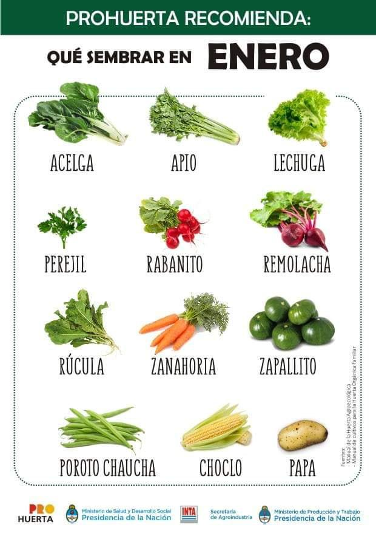
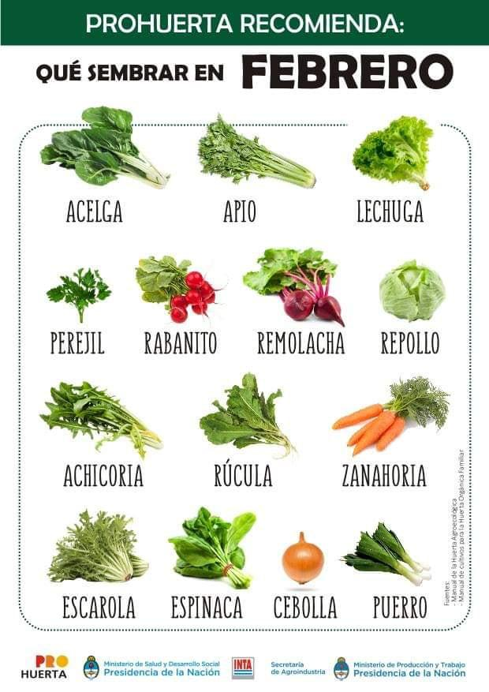
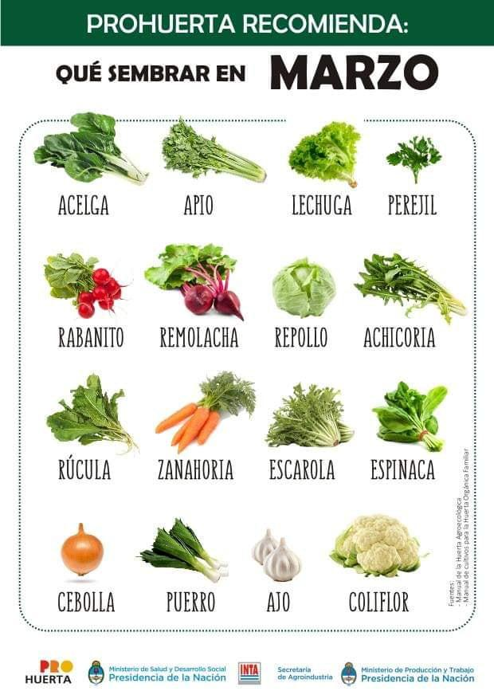
Abril-Junio
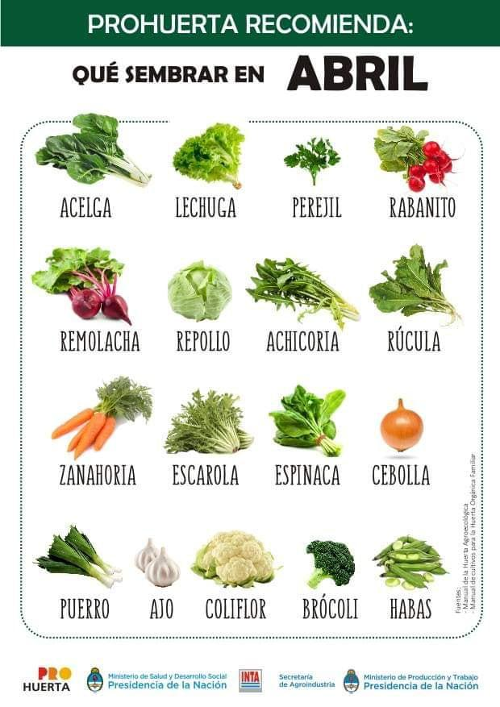
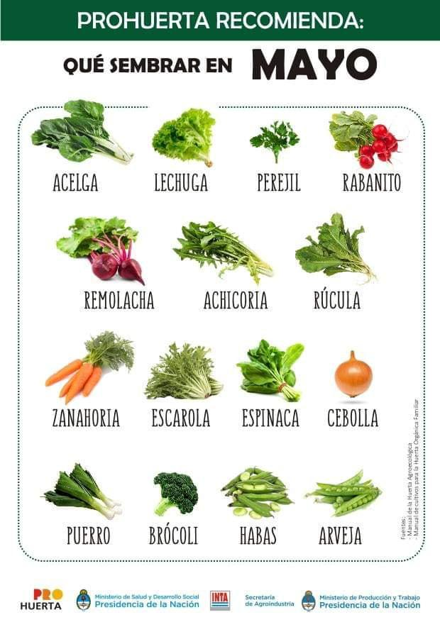
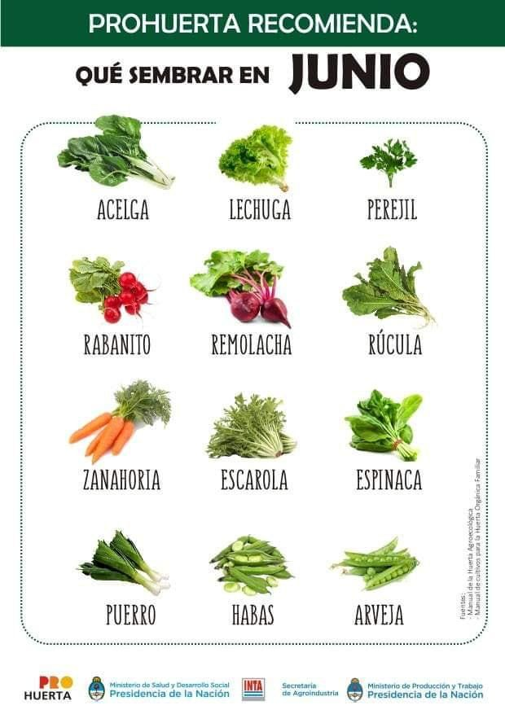
Julio-Septiembre
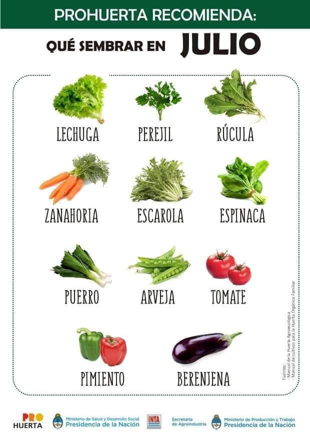
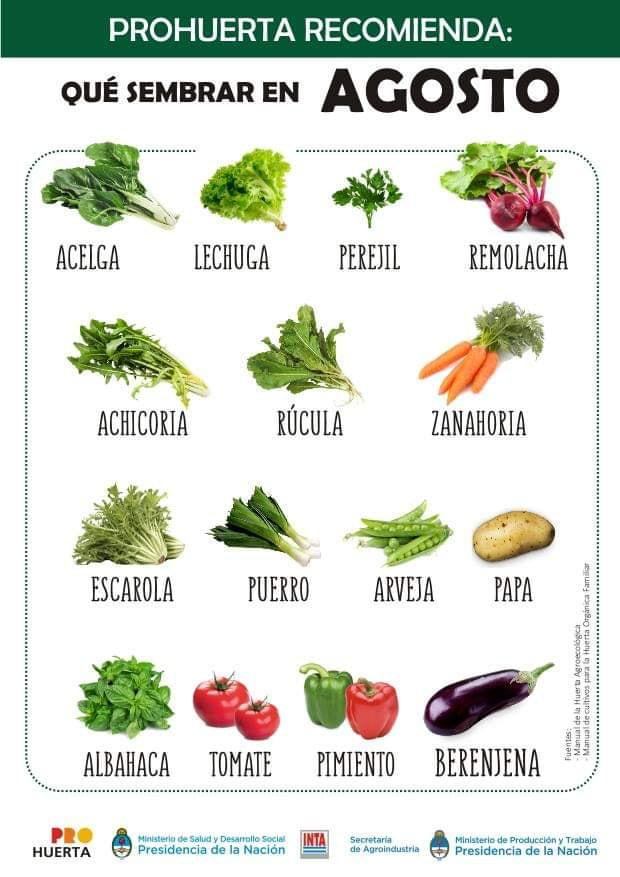
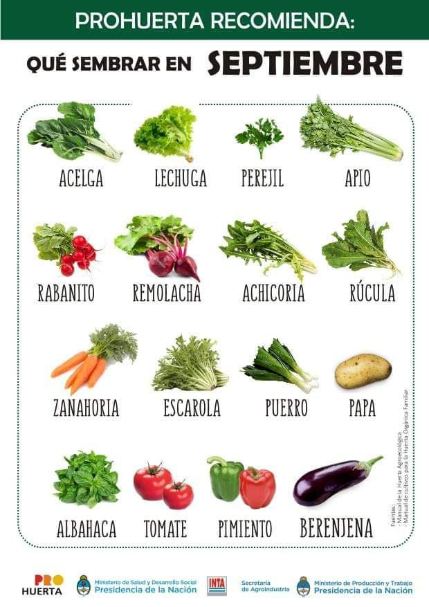
Octubre-Diciembre
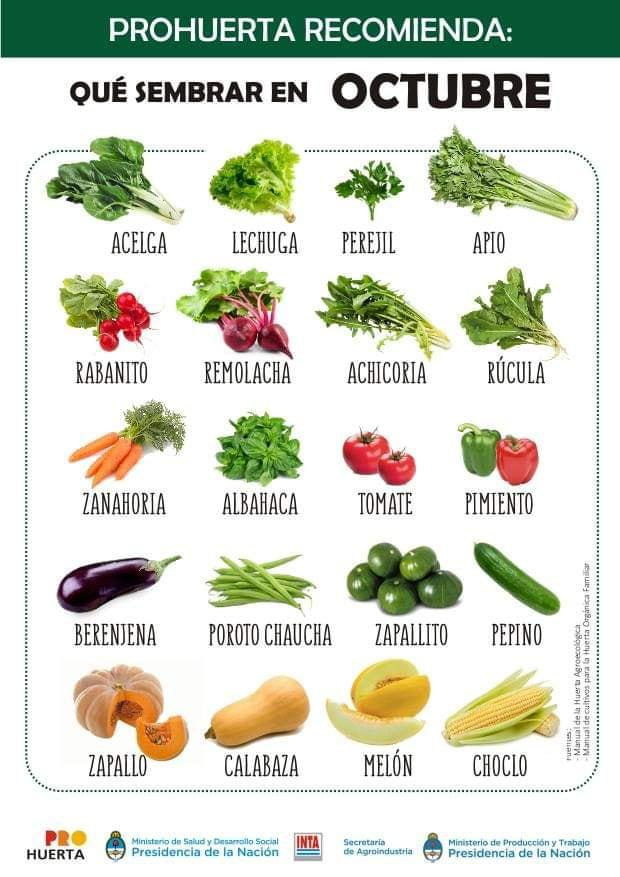
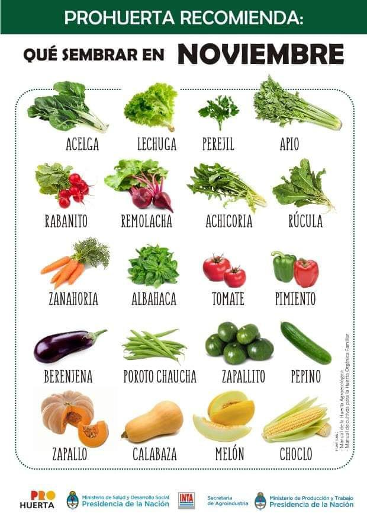
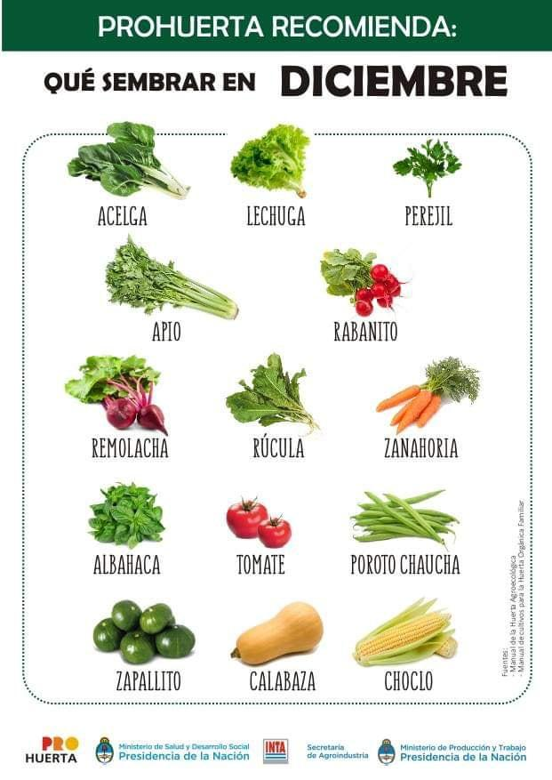